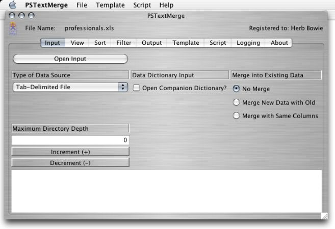

Products | PSTextMerge | Operating Guide
Input Tab
This tab allows the user to open a new data source for input. The following controls appear on the screen, with the functions as described. Click on the controls to invoke their functions.
Open Input
Clicking on this button will allow you to select the file or directory to be input. Make sure that all of the following controls are properly set before pressing this button. This function can also be invoked via the File/Open Menu item or with the O shortcut key.
Type of Data Source
The default input is a tab-delimited text file, which may have been saved or exported from a spreadsheet, database, address book or other tabular data source. But other options are available as well. Select the one you want from the drop-down list.
Following are descriptions of each of the currently available options.
Tabbed Data File
This is a text file. Each line in the file must use tabs (or commas, if the file extension is ".csv") to separate each field, or column, in the line. The first row of the file must contain column headings. These column headings will be used to identify the columns.
File Directory
When you specify a file directory as your data source, each entry in that directory will then be treated as if it were a single record, or line, or row, from a data file. The "Maximum Directory Depth" field below will control the depth to which sub-directories are read. The following special column headings are predefined for file directories.
- Sort Key
- Used for sorting the directory entries alphanumerically, without regards to case (upper or lower) or punctuation. The complete file path will appear here, all in lower-case, with spaces between file directories, and spaces replacing punctuation.
- Folder1 through Foldern
- Folder1 will contain the first sub-directory name, within the specified input directory, if this entry came from a sub-directory. Folder1 through Foldern columns will appear, where "n" is the maximum directory depth - 1 (since a maximum directory depth of 1 indicates no sub-directory explosion at all).
- File Name
- Name of the file or sub-directory.
- Type
- The type of directory entry: "File" or "Directory".
- English Name
- A file name with standardized spacing, without punctuation, and without a file extension.
- File Ext
- The file extension, if a file and if it has one.
- File Size
- Size of the file, in bytes.
- Last Mod Date
- Date of last change to the file, in "yyyy-mm-dd" format.
- Last Mod Time
- Time of last change to the file, in "hh:mm:ss zzz" format, where "hh" is a 24-hour (military) hour, "mm" is minutes, "ss" is seconds and "zzz" is an abbreviation of the time zone.
- Word1 through Word5
- The file name, without directories and without extension, will be broken down into up to five separate fields, using punctuation, spaces, and case transitions to demarcate words.
HTML Bookmarks using Lists
Setting this option will cause the program to treat the input file as HTML. It will expect the file to contain bookmarks, using nested lists to indicate a folder hierarchy. A table will be created with the following columns. Many bookmark managers, including popular browsers, can save or export bookmarks into this format.
- Category 1 through 6
- Any text found outside of an actual hyperlink will be placed in one of these category columns, depending on the nesting level of the list it was found in.
- Description
- The text that was hyperlinked.
- If the hyperlink starts with "mailto:", then it will be interpreted as an e-mail address and placed in this column.
- Web Site
- If the hyperlink does not start with "mailto:", then the URL will be placed in this field.
HTML Bookmarks using Headings
Setting this option will cause the program to treat the input file as HTML. It will expect the file to contain bookmarks, using varying levels of heading tags to indicate a folder hierarchy. A table will be created with the same columns as the HTML Bookmarks using Lists, described above. The contents of the varying heading levels will be placed in Category 1 through 6.
HTML Table
Setting this option will cause the program to treat the input file as HTML. It will expect the file to contain a table, using table, tr, th and/or td tags. The first row in the table will be expected to contain column headings, with following rows containing the corresponding data.
Note that many HTML pages are laid out using tables, not to present columns and rows of data, but to format the page in a desired fashion. Tables containing column headings and following data may often be embedded in such layout tables. In order to try to separate the two, PSTextMerge in this mode will look for the first table cell (within th or td tags) containing 1 to 40 characters of text, with the idea that text beyond either extreme is not likely to be a true column heading. During this search for the first cell of a data table, table cells with colspan or rowspan parameters greater than 1 will also be ignored.
In some cases, however, you may need to edit the prospective input file with your favorite text editor, and delete lines preceding and following the table containing the data you are interested in, saving the resulting file as a separate file to be input to PSTextMerge. If a true first column heading is longer than 40 characters, then you will also need to reduce its length to the acceptable 1-40 range.
Note that for any HTML input option, character entities found within HTML text will be translated to their equivalent ASCII characters. For now, translation is only provided for characters that are not platform-specific: " " (non-breaking space), "<" (less than sign), ">" (greater than sign), "&" (ampersand) and """ (double quotation marks). Entities may be specified using mnemonics or their numeric equivalents.
Basic XML
Setting this option will cause the program to treat the input file as XML. Field names will be stored in columns 1 - 4, with column names "Name1" through "Name4", and field values will be stored in column 5, with column name "Data".
Excel Spreadsheet
Setting this option will cause the program to treat the input file as a Microsoft Excel spreadsheet. The first or only worksheet (tab) will be accessed. The first row will be expected to contain column headings, with data in following rows. The first blank row will terminate the list. Each row in the spreadsheet (after the first, containing headings) will be treated as a data record, and each column will be treated as a separate field. Columns containing hyperlinks will also generate fields containing the hyperlinks, and named by appending "link" to the column heading. For example, a column named "ISBN" could have its content accessed with the variable "isbn" and its link accessed with the variable "isbnlink".
Excel Table
Setting this option will also cause the program to treat the input file as a Microsoft Excel spreadsheet. The first or only worksheet (tab) will be accessed. The first blank row will terminate the list. With this option, each row in the spreadsheet will be returned as a single data field, identified by a variable name of "Table Row". The data returned will include beginning and ending td tags for each column, with appropriate formatting and cell dimensions and hyperlinks, mimicking the format of the Excel spreadsheet as closely as possible. The data returned does not include beginning or ending tr tags.
PSPub Outline
This is a special text file format to allow easy representation of an outline structure. Indention is used to indicate outline levels. The first character of the first line is assumed to be the "bullet" character that will subsequently identify all list items. Blank lines indicate paragraph breaks. A line beginning with "a:" (or simply with "http:") identifies a URL to be associated with the preceding outline item.
This structure is then converted to a columnar data structure, with one row for each paragraph/list item, and with the following columns.
- sectionnumber1 through sectionnumber10
- The sectionnumber1 column contains the current highest level "section", or item number, in the overall structure. These numbers are assigned internally, beginning with 1, and are not taken from the input file.
- headingflag
- Set to "true" if this item is a bulleted item, otherwise set to "false".
- level
- Starting with 1, the depth of the current item in the overall structure.
- text
- The body of the item or paragraph.
- link
- The URL, if any, supplied for this item or paragraph.
This columnar data can then be formatted and printed using the appropriate template. Several samples are supplied in the templates folder with the PSTextMerge folder supplied with the application's distribution.
Data Dictionary Input
Clicking on this check box causes the program to look for a special data dictionary file to accompany the tab-delimited data source. The data dictionary file must have the same name as the primary file, but with a file extension of ".dic".
The data dictionary file itself is in tab-delimited format. Each row in the file (after the column headings) represents one column in the primary data file.
Note that the easiest way to create a data dictionary for a file is to input the file to PSTextMerge (without a dictionary), then Output it with a dictionary (see the Output section for details). You can then edit the resulting file, only modifying the values you wish to change.
A dictionary may have the following columns describing the fields in the primary file.
Proper Name
This is the column heading that identifies this field in the primary data file. It would normally include mixed-case, spaces and punctuation to make it readable.
Common Name
This is really a lowest-common denominator form of the column heading, with capitals, spaces and punctuation all removed. This is used internally by PSTextMerge to allow slight variations in punctuation, etc., without recognizing them as two separate names.
Alias For
If the names previously given should be treated as an alias for another field name, then this column should contain the primary name for the field, and the remaining columns for the alias should be left blank. This feature doesn't do much in this release of PSTextMerge, but should become more meaningful in later releases.
Data Format Rule
The default value here is "DataFormatRule", which causes no special formatting of the input data. But specifying another value can cause the input data to be formatted and even converted according to any of the following special rules.
- AllCapsRule
- Causes all letters to be capitalized (good for US state codes, for example).
- CountryRule
- Ensures that the first letter of each word is capitalized, and remaining letters are lower-case, with the exceptions of the values "UK and "USA", which are ensured to be in all capitals. Intended for mailing list fields containing country!
- DataFormatRule
- Performs no conversion or formatting. This is the default value when PSTextMerge is creating a new dictionary file.
- DateRule
- Generally expects a date in a loose month-day-year format, and formats it into a "tighter" month-day-year format, with two-digit numbers for each. More flexibility may be supported in later releases.
- HyperlinkRule
- Replaces spaces with "%20" strings, and adds a protocol of "http:" or "file:" if one is not present, based on whether the address looks like a WWW address or a local file. Good for formatting hyperlinks from MS Office documents into valid HTML URL links.
- InitialCapsRule
- Ensures that the first letter of each word is capitalized, and other letters are lower-case. Good for formatting names of people, cities, etc.
- LowerCaseRule
- Ensures all letters are lower-case. Good for formatting URLs and e-mail addresses.
- USMobileRule
- Intended for formatting of mobile (cell and pager) telephone numbers according to US conventions. Similar to USPhoneRule, but with different rules for conversion of the 602 area code.
- USPhoneRule
- Intended for formatting of non-mobile telephone numbers according to US conventions. The standard format is "aaa-xxx-nnnn", where "aaa" is the area code, "xxx" is the local exchange, and "nnnn" is the rest of the phone number. The default area code is 602, for Phoenix, Arizona. This rule also will convert area codes from 602 to one of the newer Phoenix metropolitan area codes, depending on the exchange. Note that this logic has limited usefulness at this point, as new (and duplicate) exchanges begin to be assigned within the three area codes.
Function
If a valid function name is specified here, then the field value will be calculated using the specified function. The following functions are available. The functions make use of the parameters specified in the following columns.
- Lookup
- Looks up the value for this field in a separate table, stored as a tab-delimited file in the same directory, using the following five parameters.
Parm Used As Parm1 Name of the file containing the lookup table. Parm2 Name of the field in the lookup table that should be used as the table's key. Parm3 A value of "Yes" or "True" indicates that the key comparison should be case-sensitive. Parm4 Name of the field in this file that should be used as the lookup key. Parm5 Name of the field in the lookup file that should be returned and used as the value for this field.
Parm1
Used as input to the specified function.
Parm2
Used as input to the specified function.
Parm3
Used as input to the specified function.
Parm4
Used as input to the specified function.
Parm5
Used as input to the specified function.
Merge Into Existing Data
Select one of the following radio buttons to indicate how and whether you want new data to be merged with existing data.
No Merge
This is the default. The next data source to be input will overlay any data previously input.
Merge New Data With Old
The next input data source to be opened will be merged with the current data visible on the View Tab. Existing sort keys and filters may need to be reapplied. The new data and the old data should have column names that are at least partially overlapping, if not identical.
Merge with Same Columns
The next input data source to be opened will be merged with the current data visible on the View Tab. The program will not look for column headings in the new input file, but will instead assume that the column names for the new file are the same, and in the same order, as those currently visible on the View Tab. Existing sort keys and filters may need to be reapplied.
Note that this merge option is useful for programs (such as AppleWorks) that do not include column headings in their export files. If a separate file is created containing only column headings, then it can be input first, followed by the headerless file, with this merge option.
Maximum Directory Depth
If you are about to read a file directory, then this field controls whether sub-directories are read, and to what depth. A value of 1 is the default, and indicates that only files and directories in the specified directory will be listed, with no sub-directory contents. A value of 2 indicates one level of sub-directories, and so forth. Use the Increment and Decrement buttons to change the depth.
Continue with View Tab.
| Home | Downloads | Store | Support | Products |
|
Copyright © 1999-2007 Herb Bowie • All rights reserved • E-mail:
http://www.powersurgepub.com/ • input.html • Revised: 4/15/07